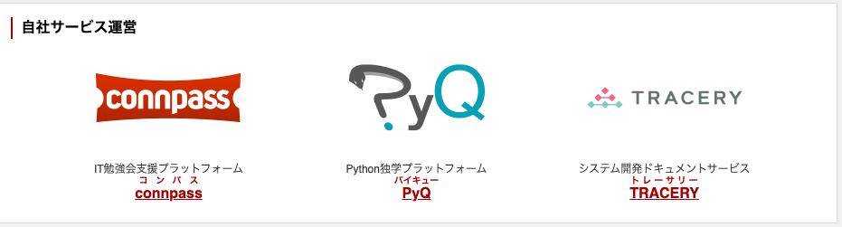
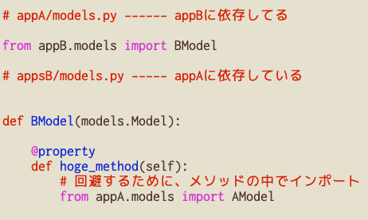

- 私は主にTRACERYを開発しています
個人でお手伝い
基本的に Djangoアプリどう作るか、分けるか という話だけをします
体感的に適用できそうな規模は以下のようなイメージです
project
├── controllers
│ ├── FugaContorller
│ └── HogeContorller
├── models
│ ├── Hoge
│ └── User
└── views
├── hoge_detail.html
└── hoge_list.html
Django アプリケーション は単なる Python パッケージで、 Django プロジェクトで使うことのみを意図したものです。 アプリは一般的な Django の慣例に則っているでしょう。 例えば models, tests, urls, views のサブモジュールがあることなどです。
via https://docs.djangoproject.com/ja/4.1/intro/reusable-apps/
Django apps are small libraries designed to represent a single aspect of a project. A Django project is made up of many Django apps. Some of those apps are internal to the project and will never be reused; others are third-party Django packages.
Djangoアプリは、プロジェクトの1つの側面を表現するために設計された小さなライブラリです。 Djangoのプロジェクトは、多くの Djangoアプリで構成されています。 それらのアプリの中には、プロジェクト内部のもので決して再利用されることのないもの もあれば、 サードパーティの Django パッケージのものもあります。
via 4 Fundamentals of Django App Design | Two Scoops of Django 3.x
It's not uncommon for new Django developers to become understandably confused by Django’s usage of the word “app”.
新しいDjango開発者が、 "app"という単語の使い方に戸惑うことはよくあることです。
via 4 Fundamentals of Django App Design | Two Scoops of Django 3.x
While common for small Django projects, larger projects typically don’t follow this pattern.
There are positives to this approach. Specifically, migrations are easier and table names follow a simplified pattern. It has to be said that other frameworks such as Rails embrace this technique and are quite successful.
However, while Rails and other tools are designed to follow this pattern, Django isn't optimized for this design.
via 4.5.2 The Large Single App Project | Two Scoops of Django 3.x
小さな Django プロジェクトではよくあることですが、大きなプロジェクトでは一般的にこのパターンに従いません。
このアプローチには利点があります。具体的には、移行がより簡単になり、テーブル名は単純化されたパターンに従います。Rails のような他のフレームワークもこの手法を取り入れ、かなり成功していると言わざるを得ません。
しかし、Rails や他のツールはこのパターンに従うように設計されていますが Django はこの設計のために最適化されていません
via 4.5.2 The Large Single App Project | Two Scoops of Django 3.x
Djangoスタックの基本的な目標は、疎結合と高い凝集度を実現することです。フレームワークの各レイヤーは絶対に必要でない限り、相手をお互いに「知る」べきではありません。
例えば、テンプレートシステムはWebリクエストについて何も知らず、データベース層はデータ表示について何も知らず、ビューシステムはプログラマがどのテンプレートシステムを使っているかを気にしません。
Django は利便性のためにフルスタックとなってはいますが、スタックのどのコンポーネントも、可能な限り独立させてあります。
via https://docs.djangoproject.com/ja/4.1/misc/design-philosophies/#loose-coupling
回避するために、メソッドの中でインポートしてしまう
via https://seddonym.me/2018/05/04/django-signals/#project-dependency-flow
頻繁に必要になるであろう、AUTH_USER のモデル get_user_modelで取れる
from django.contrib.auth import get_user_model
User = get_user_model()
それ以外のモデルも、django.apps.apps.get_model() 取得できる
from django.apps import apps
Blog = apps.get_model("blog.Blog")
- アプリはひとつのタスクにフォーカスしましょう
- アプリ間が直交になるか考えてみましょう
- 循環インポートを避けましょう
- 依存関係が単方向になるよう整理しましょう
- 依存しても良いアプリを作りましょう
- DJangoの仕組みを使いましょう (シグナル、ミドルウェア, モデル取得)
- アプリとURL構造を一致しないようにしましょう
{kind=link}
{kind=link}
{kind=link}
{kind=link}
{kind=link}
{kind=link}
{kind=link}